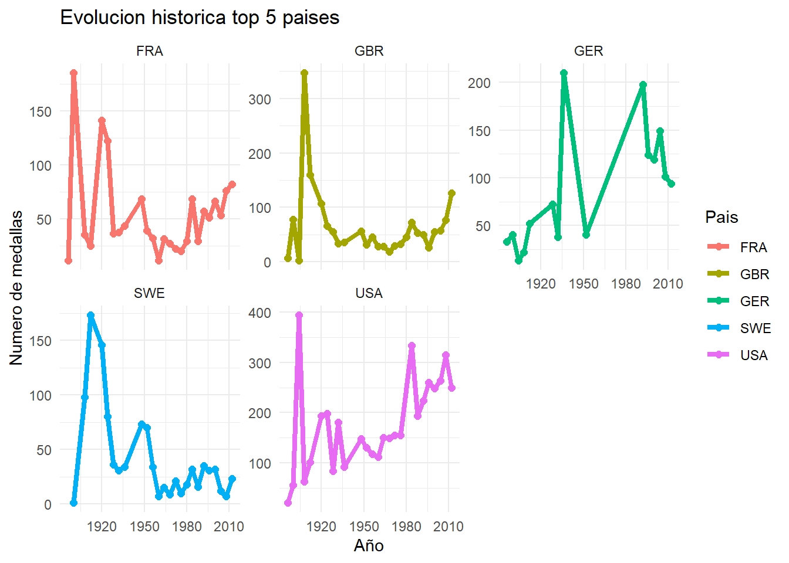
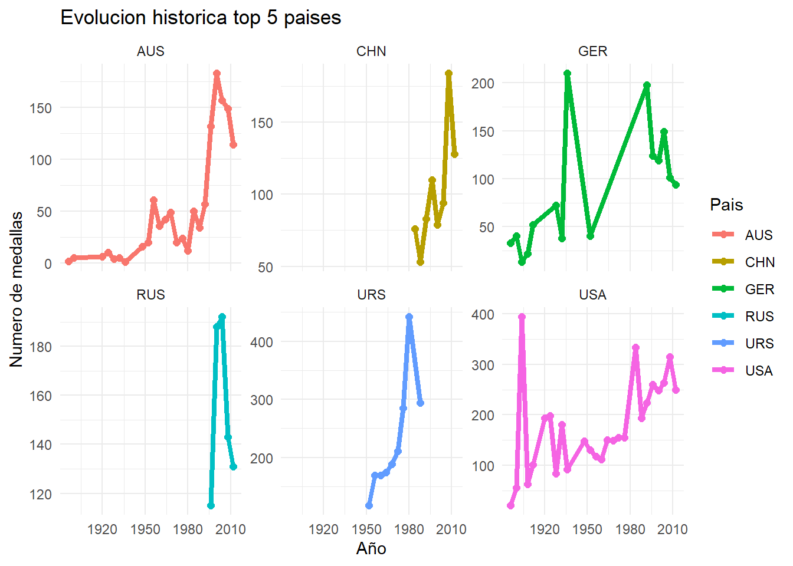
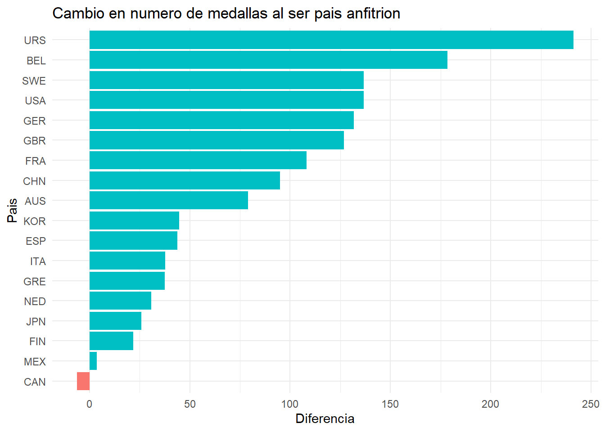
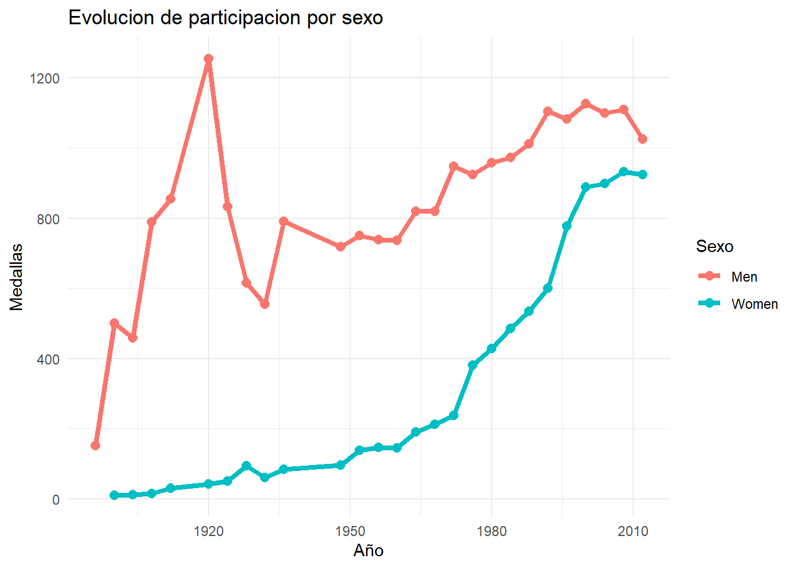

The following objects are masked from 'package:stats':
filter, lag
The following objects are masked from 'package:base':
intersect, setdiff, setequal, union
library(ggplot2)
Limpieza y correccion de datos
medallas <-read_csv("../data/summer.csv")
Rows: 31165 Columns: 9
── Column specification ────────────────────────────────────────────────────────
Delimiter: ","
chr (8): City, Sport, Discipline, Athlete, Country, Gender, Event, Medal
dbl (1): Year
ℹ Use `spec()` to retrieve the full column specification for this data.
ℹ Specify the column types or set `show_col_types = FALSE` to quiet this message.
medallas %>%filter(if_any(everything(),is.na)) #valores NA
# A tibble: 4 × 9
Year City Sport Discipline Athlete Country Gender Event Medal
<dbl> <chr> <chr> <chr> <chr> <chr> <chr> <chr> <chr>
1 2012 London Athletics Athletics Pending <NA> Women 1500M Gold
2 2012 London Weightlifting Weightlifting Pending <NA> Women 63KG Gold
3 2012 London Weightlifting Weightlifting Pending <NA> Men 94KG Silv…
4 2012 London Wrestling Wrestling Frees… KUDUKH… <NA> Men Wf 6… Silv…
# A tibble: 3 × 9
Year City Sport Discipline Athlete Country Gender Event Medal
<dbl> <chr> <chr> <chr> <chr> <chr> <chr> <chr> <chr>
1 2012 London Athletics Athletics Pending <NA> Women 1500M Gold
2 2012 London Weightlifting Weightlifting Pending <NA> Women 63KG Gold
3 2012 London Weightlifting Weightlifting Pending <NA> Men 94KG Silver
#Corregir nombres faltantes y paises NAmedallas %>%filter(if_any(everything(),is.na)) %>%mutate(Fila=which(is.na(medallas$Country))) #filas en la que esta cada NA
# A tibble: 4 × 10
Year City Sport Discipline Athlete Country Gender Event Medal Fila
<dbl> <chr> <chr> <chr> <chr> <chr> <chr> <chr> <chr> <int>
1 2012 London Athletics Athletics Pending <NA> Women 1500M Gold 29604
2 2012 London Weightlifting Weightlif… Pending <NA> Women 63KG Gold 31073
3 2012 London Weightlifting Weightlif… Pending <NA> Men 94KG Silv… 31092
4 2012 London Wrestling Wrestling… KUDUKH… <NA> Men Wf 6… Silv… 31111
# A tibble: 4 × 9
Year City Sport Discipline Athlete Country Gender Event Medal
<dbl> <chr> <chr> <chr> <chr> <chr> <chr> <chr> <chr>
1 2012 London Athletics Athletics Jamal,… BRN Women 1500M Gold
2 2012 London Weightlifting Weightlifting Girard… CAN Women 63KG Gold
3 2012 London Weightlifting Weightlifting KIM, M… KOR Men 94KG Silv…
4 2012 London Wrestling Wrestling Frees… KUDUKH… RUS Men Wf 6… Silv…
Medallas a nivel historico
En este apartado se analiza cómo ha cambiado la cantidad de medallas ganadas por los países a lo largo de los años. Para simplificar el análisis, se considerarán únicamente los diez países con mayor número total de medallas.
# A tibble: 10 × 2
Country cantidad_total
<chr> <int>
1 USA 4585
2 URS 2049
3 GBR 1720
4 FRA 1396
5 GER 1305
6 ITA 1296
7 AUS 1189
8 HUN 1079
9 SWE 1044
10 NED 851
theme_set(theme_minimal())ggplot(top_10, aes(x=reorder(Country,cantidad_total),y=cantidad_total,fill = Country))+geom_col(show.legend =FALSE)+coord_flip()+labs(title ="Top 10 paises con mas medallas",x="Pais",y="Numero de medallas")
# A tibble: 30 × 3
# Groups: Periodo [6]
Periodo Country cantidad
<chr> <chr> <int>
1 1896-1915 USA 633
2 1896-1915 GBR 594
3 1896-1915 SWE 272
4 1896-1915 FRA 256
5 1896-1915 GER 160
6 1916-1935 USA 656
7 1916-1935 FRA 336
8 1916-1935 SWE 293
9 1916-1935 ITA 282
10 1916-1935 GBR 262
# ℹ 20 more rows
ggplot(top5_20años, aes(x=reorder(Country,cantidad),y=cantidad, fill = Country))+geom_col(show.legend =FALSE)+coord_flip()+facet_wrap(~Periodo,scales="free_y")+labs(title ="Top 5 paises por periodo de 20 años",x="Pais",y="Medallas")
`summarise()` has grouped output by 'Country'. You can override using the
`.groups` argument.
evo_paises
# A tibble: 119 × 3
Country Year cantidad
<chr> <dbl> <int>
1 FRA 1896 11
2 FRA 1900 185
3 FRA 1908 35
4 FRA 1912 25
5 FRA 1920 141
6 FRA 1924 122
7 FRA 1928 36
8 FRA 1932 37
9 FRA 1936 43
10 FRA 1948 68
# ℹ 109 more rows
ggplot(evo_paises,aes(x=Year,y= cantidad, color=Country))+geom_line(linewidth =1.5)+geom_point(size=2)+facet_wrap(~Country,scales="free_y")+labs(title ="Evolucion historica top 5 paises",x="Año",y="Numero de medallas",color="Pais")

ggplot(evo_paises,aes(x=Year,y= cantidad, color=Country))+geom_line(linewidth =1.5)+geom_point(size=2.5)+labs(title ="Evolucion historica top 5 paises",x="Año",y="Numero de medallas",color="Pais")
`summarise()` has grouped output by 'Country'. You can override using the
`.groups` argument.
evo_paises2
# A tibble: 87 × 3
Country Year cantidad
<chr> <dbl> <int>
1 AUS 1896 2
2 AUS 1900 5
3 AUS 1920 6
4 AUS 1924 10
5 AUS 1928 4
6 AUS 1932 5
7 AUS 1936 1
8 AUS 1948 16
9 AUS 1952 20
10 AUS 1956 61
# ℹ 77 more rows
ggplot(evo_paises2,aes(x=Year,y= cantidad, color=Country))+geom_line(linewidth =1.5)+geom_point(size=2)+facet_wrap(~Country,scales="free_y")+labs(title ="Evolucion historica top 5 paises",x="Año",y="Numero de medallas",color="Pais")

ggplot(evo_paises2,aes(x=Year,y= cantidad, color=Country))+geom_line(linewidth =1.5)+geom_point(size=2.5)+labs(title ="Evolucion historica top 5 paises",x="Año",y="Numero de medallas",color="Pais")
ggplot(top_deportes,aes(x=reorder(Discipline,cantidad),y=cantidad,fill = Discipline))+geom_col(show.legend =FALSE)+coord_flip()+labs(title ="Top 10 deportes con mas medallas",x="Deporte",y="Medallas")
# A tibble: 15 × 3
# Groups: Country [5]
Country Discipline cantidad
<chr> <chr> <int>
1 FRA Fencing 286
2 FRA Athletics 106
3 FRA Rowing 96
4 GBR Athletics 295
5 GBR Rowing 244
6 GBR Sailing 134
7 GER Rowing 180
8 GER Hockey 141
9 GER Swimming 124
10 RUS Athletics 100
11 RUS Volleyball 72
12 RUS Artistic G. 55
13 USA Athletics 994
14 USA Swimming 895
15 USA Rowing 364
El dataframe no cuenta con una variable que diga en que papís fué la competencia.Por lo tanto, hay que crear una nueva variable Anfitrion
medallas <- medallas %>%mutate(Anfitrion =case_when( Year ==1896~"GRE", # Atenas Year ==1900~"FRA", # París Year ==1904~"USA", # St. Louis Year ==1908~"GBR", # Londres Year ==1912~"SWE", # Estocolmo Year ==1920~"BEL", # Amberes Year ==1924~"FRA", # París Year ==1928~"NED", # Ámsterdam Year ==1932~"USA", # Los Ángeles Year ==1936~"GER", # Berlín Year ==1948~"GBR", # Londres Year ==1952~"FIN", # Helsinki Year ==1956~"AUS", # Melbourne Year ==1960~"ITA", # Roma Year ==1964~"JPN", # Tokio Year ==1968~"MEX", # Ciudad de México Year ==1972~"GER", # Múnich Year ==1976~"CAN", # Montreal Year ==1980~"URS", # Moscú Year ==1984~"USA", # Los Ángeles Year ==1988~"KOR", # Seúl Year ==1992~"ESP", # Barcelona Year ==1996~"USA", # Atlanta Year ==2000~"AUS", # Sídney Year ==2004~"GRE", # Atenas Year ==2008~"CHN", # Pekín Year ==2012~"GBR", # LondresTRUE~NA_character_ ) )
# A tibble: 18 × 4
Country promedio_anfitrion promedio_no_anfitrion diferencia
<chr> <dbl> <dbl> <dbl>
1 URS 442 201. 241.
2 BEL 188 9.70 178.
3 SWE 173 36.3 137.
4 USA 292 155. 137.
5 GER 210 78.2 132.
6 GBR 176. 49.6 127.
7 FRA 154. 45.4 108.
8 CHN 184 89 95
9 AUS 122 43.0 79.0
10 KOR 77 32.4 44.6
11 ESP 66 22.1 43.9
12 ITA 88 50.3 37.7
13 GRE 41.5 4.06 37.4
14 NED 65 34.2 30.8
15 JPN 64 38.1 25.9
16 FIN 40 18.1 21.9
17 MEX 9 5.39 3.61
18 CAN 20 26.2 -6.25
ggplot(efecto_anfitrion,aes(x=reorder(Country,diferencia),y=diferencia,fill=diferencia >0))+geom_col(show.legend =FALSE)+coord_flip()+labs(title ="Cambio en numero de medallas al ser pais anfitrion",x="Pais",y="Diferencia")

Para calcular la correlaccion entre ser anfitrion y ganar mas medallas vamos usar la correlacion de Pearson
pearson_por_pais <- medallas_por_año %>%group_by(Country) %>%filter(Country%in%efecto_anfitrion$Country) %>%# solo paises que hayan sido anfitrionessummarise(cor_anfitrion =cor(Es_Anfitrion, medallas, method ="pearson") ) %>%arrange(desc(cor_anfitrion))pearson_por_pais
# A tibble: 18 × 2
Country cor_anfitrion
<chr> <dbl>
1 BEL 0.957
2 GRE 0.914
3 CHN 0.829
4 URS 0.817
5 FRA 0.715
6 SWE 0.632
7 GBR 0.610
8 USA 0.554
9 GER 0.544
10 AUS 0.405
11 ESP 0.395
12 KOR 0.361
13 ITA 0.302
14 NED 0.259
15 FIN 0.246
16 JPN 0.225
17 MEX 0.126
18 CAN -0.0615
## Pearson general de los paises que alguna vez fueron anfitrionesmedallas_por_año %>%filter(Country %in% efecto_anfitrion$Country) %>%summarise(cor_general=cor(Es_Anfitrion,medallas,method ="pearson"))
# A tibble: 1 × 1
cor_general
<dbl>
1 0.409
Bibliografia: R Core Team. (2023). cor: Correlation matrices. In R Documentation. https://stat.ethz.ch/R-manual/R-patched/library/stats/html/cor.html
`summarise()` has grouped output by 'Year'. You can override using the
`.groups` argument.
ggplot(medallas_por_sexo, aes(x= Year,y=cantidad,color=Gender))+geom_line(linewidth =1.5)+geom_point(size=2.5)+labs(title ="Evolucion de participacion por sexo",x="Año",y="Medallas",color="Sexo")

medallas_por_sexo %>%group_by(Year) %>%mutate(proporcion=cantidad/sum(cantidad)) %>%ggplot(aes(x=Year,y=proporcion,color=Gender))+geom_line(linewidth =1.5)+labs(title ="Proporcion de medallas femeninas y masculinas",x="Año",y="Propocion",color="Sexo")